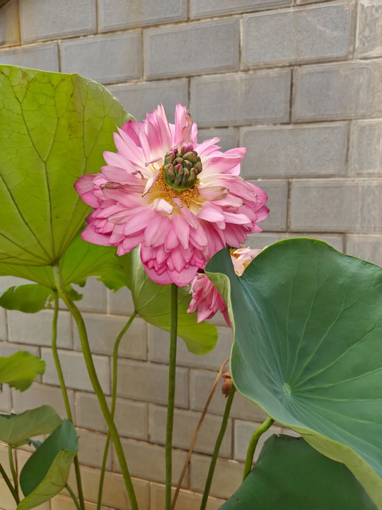

共计2600个字，2张图
好久没写影评了，最近看的两部电影《长安三万里》和《八角笼中》都值得我来写一写。正好今天完成了科研项目中的一个小步，于是抽出空来写一写。首先可以说一个基调，两部都是我会愿意推荐人去看的。
我在几个熟悉的小群当中和朋友说过一些当时的感受。现在写一篇稍微长一些的，把整个思路捋一遍，顺便谈谈整体最近的风向感受。
写这篇时我完全没有顾及没看过的人的感受。
（剧透分割线）
《长安三万里》
推荐的理由自然是文化的理由，觉得要改进的依然是文化的增益。
我去之前没做任何铺垫。能做的铺垫都在以前的诗歌和文学史积累当中度过了。很多时候一件事情刚刚起头，便能知道后面大致要讲什么内容。这很好，因为一部半文学史半演义，但是集中在以诗言志的中心要义上的电影，重点在如何讲故事的手法上，以及是不是真的讲好了故事。至于故事悬揣了多少，我觉得那是次要问题。
结束了才知道原来是追光的作品。追光的质量有保障，这一点已经在前几年的大电影中知道了。今年出彩的一点是，美工组再也不要给台本组寄刀片了。《长》的剧情诠释很连贯，并且诗词的插入很到位。但经受过文学史教育的人，都能不同程度地接上这部电影的剧情。很夸。所谓经由诗词传家的文化自信，我觉得在这样的雄心和诠释前，这一部当属目前见到过的质量精良作品。
美中不足的是后期，一些地方音画不同步。这当然是小问题。不过我不是刻意要指出这个小问题，而是想指出另一个大问题：关于诗词吟诵。
电影目前都是以汉语普通话作为对话载体，少有加入传唱和节奏。我们说诗歌，有朗读、有吟诵、有咏叹。这些是有区别的。我以为，当我开始这样提要求的时候，本身已经是对现有水平的极大肯定了。
隋唐时期的中原官话、西南官话、吴语乃至古湘语、百越族，这些地方都有自己的语音体系。我只在最后听到了一段粤语的朗读。全片中大部分时刻，吟诵绝句有吟诵专门的气口、有合乎当地的语音和语调。我打个简单但不一定对的比方：李白少年出川是否会带有西南官话比如和今天川渝相近的内容；到了扬州，是不是裴十二的话语里会有吴语的转调；长安作为三教九流杂烩聚居之处，是不是应该在曲江楼里个人吟诵南腔北调。
我以为，朗读不是吟诵。朗读是高声，以确凿之力朗声读出。而吟诵不同，但为君故沉吟至今，其节奏和韵律美学要高于朗读之上；咏叹更接近于在电影中的表达，是长声吟叹抒情调，配有伴奏或不同声部的补偿，进而在当今传媒手段里如《将敬酒》一段还可以加入视觉。只有一点，吟诵不应只是朗读。讲人话就是，那些诗词，你不是仅仅把它们说出来了，而是诵。什么叫传诵呢？有区别的。情感上，《静夜思》和《早发白帝城》是全片切入的胜笔。
当诵和前述南腔北调关联起来，这时候歌者的情志就丰满起来了。初出蜀川时意气风发的西南官话，及至淮扬时的一些沉迷切入，在长安时的汪洋恣肆。比如高适和李白在塞外客栈相遇，一个是愤懑悲发的沉郁之作，高适会用什么口气“一吟泪双流”（我当然知道这是贾岛的）；李白只是刚刚读完驿站外诗文板，他能怎么说出来这段话呢？这里倒是很实在，用一种好像小学生根本不理解诗词的像相互抽背课文一样的语气说了出来一首诗，这很合理。说、读、诵。我想是不同的。这点对配音演员的要求很高，因为不仅仅只是打哈哈、搞点后期补偿就能提升上来的层次。忽悠外国人好像差不多了，让小学生跟着一起背倒也没什么问题。只不过我去了义务教育，读了几本书，这个长衫穿上我以为是有更缤纷的文化超然。
所以几个没有考虑到的小问题，一个是当今视角言及故人时的女性视角值得一些关注，另一点是文化意义上的汉语言。胡姬听起来就只会舞快些吗，我以为这里如果是一个开放的唐朝，在我的视角看来未尝不能有其他民族的语音、文字。这个估计对历史组提出了更多的要求，在此倒是按下不表。
话又说回来，饭得一口一口吃。这次能做得这么好，看我开始提这种要求了，本身就是对现有成果的极大肯定。只是我已经知道了最好的地方在哪里，所以会更希望能看到优秀的作品出现。
《八角笼中》
同样是根本不知道这个电影在讲什么就进了电影院，同样超乎我预料的一部电影。我承认我对王宝强有点偏见，晚辈封于修和唐人街探案，让我对他的印象有一些扁平化了。
这部电影让我惊讶的除了叙事上不再是一部爆米花电影，同时也在镜头语言上取得了长足的进步。叙事的内核不仅完整，对各方的刻画也不错，唯一就是广告植入得有些过于明显，当然这是生活所需，人要吃饭。
这部电影我在朋友圈评价为一个深刻内核与形式的呼应统一。镜头构图和色彩的应用，在沙场部分就有长足的进步，人物的内心如何、场面如何，镜头语言不言而喻（取本义）就很好。能做到这一点的积累和能欣赏这一点，应是已经跳脱了大部分烂片圈钱制作而有一些深意电影时才能搞明白。川剧的一段意识流的创意也不错，和上一部电影里中我为什么基于自己是个中文母语者来谈吟诵一样，川剧变脸也是基于对民俗的了解而申发出来。
一开始我甚至被王宝强骗过了，我只觉得格斗就是格斗、是他自己身份写实的一个缩影。甚至他去电视访谈骂人，我觉得有时候都是带着个人情绪在回应一些我以前在报道中看得太多的关于这个人的报道。变脸也只是新学了个意识流的拍摄手法，外国营销手段范式下的中国瓶子中国酒，甚至内核我以为都只是那些教育、成长就完了。
直到最后的拳击赛，剪辑把台上的功夫采用黑白，外人的反应用彩色。我第一反应是，笑，这东西就是为了血腥场面过审吧。忽然一想，这制片组好狡猾，用这种方式说，此格斗非彼格斗！周边加油的人是彩色的、牢房里的人是彩色的，观众席上的人是黑白的、擂台上的人是黑白的。好狡猾！指桑骂槐，先言他物、而隐瞒了所叹之词。至于叹什么，各花入各眼。
我怀疑可能的情况是，一开始也没想到能拍得这么层次化，让每个角度解读都能产生比较不错的解读。我是习惯以深刻严肃角度、和荒诞不经角度来考量事物的人。但这部电影的拍摄手法又明晃晃地写着：我们有能力展示我们所愿望拍到的那些内核。我倾向于认为这部电影最后在我这达到了一个冲突内核与形式的统一，进而无心插柳柳成荫，说了一些更形而上的话。
蛮好，这两部电影都超乎我的预料。我甚至跟人说中国电影越来越有盼头了，这句话胡说八道的成分很小，可以肯定的是看完这两部之后我对最近的风向更乐观了一些。因为电影的制作有周期，能看到的往往都滞后了。于是我会推荐别人去看，甚至写了这篇影评（可别瞎说了你根本不是为了写在别人观看之前而写的）
